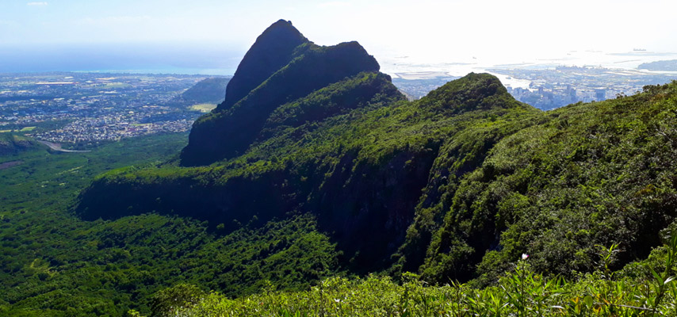
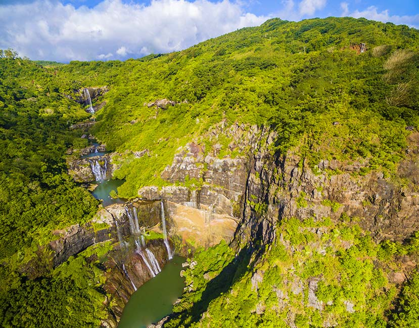
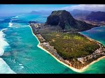
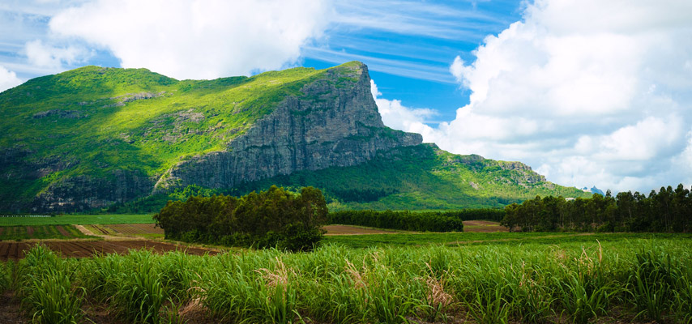

Piton De La Petite Rivière Noire

Amidst the unspoilt rainforest of Mauritius, there is almost 17,000 acres of rolling hills, deep valleys, spectacular waterfalls and unparalleled beauty of flora and fauna in the south-western region.
Elevation: 828 m
Prominence: 828 m
Isolation: 189 kilometres (117 mi)
Location: Petite Rivière Noire, Mauritius
Le Pouce Mountain
Le Pouce Mountain is located on the North-West part of Mauritius, in the Moka district between the Signal Mountain and the Pieter Both Mountain. Le Pouce Mountain Peak is recognized as the third highest mountain in Mauritius at 812 meters after the Pieter Both and the Piton de la Petite Rivière Noire.
Elevation: 812 m
Prominence: 232 m
Isolation: 189 kilometres (117 mi)
Location: La Laura-Malenga, Moka, Mauritius
Sept Cascades
The unique Tamarind Falls, commonly known as ‘Sept Cascades’ is one of the most beautiful and serene places in Mauritius, where one can discover the lush green vegetation along with some indigenous plant species and tropical birds. There is no other way to get close to this incredible place than through a wonderful trek
The trek is quite easy, fun and accessible to all.
You will be stunned by the view of the enthralling waterfall of 40 meters, the marvelous sight of the lushly green canyon, and many other captivating features.
Location: La Laura-Malenga, Moka, Mauritius
Le Morne Brabant
The iconic hiking trail of Mauritius-Le Morne Brabant has to be definitely among the top things to do while staying in Mauritius. This majestic slave trail is located at the extreme Southwestern tip of the island where you will have the chance to feast your eyes on the most striking views of Mauritius. The rocky peninsula has a summit which covers an area of over 12 hectares (30 acres), and is about 556 meters above sea level.
Area: 349.6 ha (864 acres)
UNESCO World Heritage Site inscription: 2008
Highest point: 1595ft
Le Morne,Mauritius
Lion Mountain
The sphinx-like mountain peak majestically overlooks the Vieux Grand Port, witnessing the Great Battle between the squadrons of frigates from the French Navy and the British Royal Navy that took place some 200 years ago.
peak (480m)